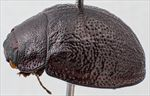
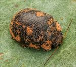
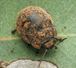
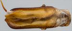
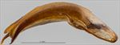
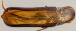
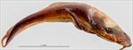
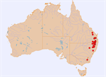

Click on images to enlarge

Male, Jimna, S.E. Queensland

Male, Bendemeer, N.E. New South Wales

Male, Bookookoorara, N.E. New South Wales

Aedeagus, dorsal view (Bookookoorara, N.E. New South Wales)

Aedeagus, lateral view (Bookookoorara, N.E. New South Wales)

Aedeagus, dorsal view (Cooyar, S.E. Queensland)

Aedeagus, lateral view (Cooyar, S.E. Queensland)

Distribution
Ta21
Name
Trachymela sp. Ta21
Reference specimen
2001-358, Gibraltar Range, NE New South Wales.
Adult Description
Length: ♂ 7.2–8.8 mm (n=63), ♀ (6.9)7.5–10.0 mm (n=68).
Colouration:
Head: Frons dark brown or (less often) black, clypeus and adjacent to anterior half of eyes black, labrum usually yellow-brown, mandibles completely black, rarely very dark brown away from tips; antennomeres 1–3 light brown, 4–6 grading towards dark brown or black, 7–11 concolorous with 6.
Pronotum: Dark brown or (rarely) black, concolorous with rear of head, with lateral margins and sometimes anterior margins behind eyes black.
Scutellum: Black.
Elytra: Dark brown, concolorous with or fractionally darker than pronotal disc, sometimes with a black patch centred on highest point of elytral suture that is usually wider posteriorly and small black raised interstices scattered about the surface, usually a few indistinct flecks of slightly lighter colour present, most frequently along elytral margin, in middle of antero-median depression and in the area behind it; punctures concolorous with interstices, humeral callus concolorous with surrounding area.
Venter & Legs: Black or very dark reddish-brown, lateral extremities of ventrites rarely a slightly lighter shade, elytral epipleura black.
Cuticular Wax: Light brown to orange-brown, with a very patchy distribution; concentrations present in two patches on the head, along lateral margins of pronotum, in a thin band (usually interrupted in the middle) along lateral margins of elytra (in sub-marginal sulcus), 2 small patches at base of each elytron and another (slightly larger) in centre of antero-median depression, smaller patches arranged roughly in 2–4 longitudinal lines from antero-median depression towards apex; elsewhere cuticular wax is very thinly scattered and may be of a lighter shade or even grey.
Morphology:
Head: Viewed laterally, body quite evenly rounded over much of surface until close to apex and relatively flat (H/L: ♂ 0.40–0.46, ♀ 0.42–0.49), where radius of curvature increases noticeably, greatest height a little in front of or near middle of elytral margin. Punctures relatively fine (pd ≈ 1.5–2 × ef) and quite evenly and densely distributed. Antennae short (AL: ♂ 38–44% BL, ♀ 32–36% BL), filiform.
Pronotum: Almost evenly curved transversely to near lateral edges where it becomes quite markedly explanate, foveal depression absent or very weak, epidermis near centre slightly elevated in a broad circular area, discal area with surface smooth to very slightly uneven, nitid, and puncturation clearly impressed with punctures similar in size to those on head, quite evenly to very slightly unevenly distributed and relatively dense (spacing ≈ 1.5–2 pd), becoming noticeably coarser towards lateral margins. Front margins join much thinner lateral margins in a smoothly rounded right-angle, with lateral margin then curving smoothly and gradually towards rear margin and becoming much thicker from about middle, broadest about 2/3 of distance to posterolateral angle.
Scutellum: Unpunctured or (rarely) with sparse punctures in anterior half, usually slightly smaller and shallower than those on pronotum.
Elytra: Surface smoothly curved throughout longitudinally, evenly or very slightly explanate transversely, antero-median depression present but shallow, punctures surrounded by very convex interstices, closely spaced and rather evenly distributed; interstices convex, giving surface a quite uniform granular appearance, may be thickened in some places forming very small and inconspicuous elevated verrucae at their intersections, surface slightly more granular in posterior third due to closer spacing of punctures; punctures more clearly defined but smaller in a smooth area straddling elytral summit, elytral suture not carinate, posterior 20% of marginal area moderately to strongly concave, surface discontinuous under humeral callus. Vertical extension of epipleura relatively small (HCE/PW = 0.31–0.34).
Venter: Prosternal process almost parallel or narrowing anteriorly, closed anteriorly, at most a very sparse scatter of setae present along prosternal process and on mesoventrite, a single long seta present on anterior, median and posterior trochanters; front edge of metaventrite beveled, flat, inner edge of epipleura lacking setae.
Male Genitalia (Aedeagus):
Dimensions: Short (LPE = 28–35% BL).
Dorsal view: Shaft approximately parallel-sided or very slightly sinuate with maximum width around middle of ostium (WPE = 0.26–0.32 × LPE) from where sides converge smoothly towards apex, tip triangular, dorsal surface lightly sclerotized, dorso-median channel present but often short and poorly defined, ostium relatively large.
Lateral view: Shaft quite evenly and continually curved over almost whole length with curvature increasing slightly just before apex, tip deflexed, flagellum quite thin and straight on exit.
Immature Stages
Unknown.
Similar species
Ta170: Very similar to Ta21 in most respects but usually lacks the black epipleura and black macula at elytral summit. See Ta170 for a more detailed discussion of the differences.
Ta173: A species that occurs in southern New South Wales and Victoria and is very similar in almost all respects to Ta21. The pattern of granulations of the elytral disc differs between the two species with the granulation more coarse in Ta173 than Ta21. The dorsal colouring of the head of Ta173 is invariably uniformly dark brown or black.
Ta15: A species from South Australia that is very similar in its general appearance to Ta21, with the same pattern of cuticular wax. It tends to have brown epipleura (except Flinders Ranges specimens) and lacks a smooth common area around the elytral summit. The aedeagus of the two species is very similar, but that of Ta15 tends to be slightly more expanded at its widest point near the apex.
Ta23: Can be readily distinguished from Ta21 by the lighter colouration of its epipleura and the pale lateral margins of pronotum.
Ta165: A small species that does overlap in size with very small specimens of Ta21 and is very difficult to distinguish from them. The two species can occur together on the same hosts. One of the few characters that distinguishes them are the rows of small and inconspicuous verrucae on the elytral disc that are present in specimens of Ta165. The aedeagus of Ta165, though quite similar in appearance to that of Ta21, is partially closed behind the ostium and thus closer to the “ovate ostium” type.
Ta113: Is very similar in most features of its external morphology and distribution of cuticular wax and it is often found together with Ta21. It has a noticeably wider elytral marginal area (HCE/PW = 0.37–0.40) than Ta21, with the inner epipleural surface not black, the cuticular wax on the posterior half of the elytral disc forms 3 longitudinal series (no more than 2 in Ta21), and its ostium is clearly ovate in form.
Notes
Taxonomy: Ta21 is a member of a species group characterized in part by the marginal cuticular wax pattern, with its dense concentrations of cuticular wax along the lateral margins of the pronotum and elytra, and the form of the aedeagus. The wide range of body lengths, variation in morphology correlated with host utilization, and wide range of host plants indicate that more than one species may be included in this "species". In particular, several larger specimens found on peppermints are often teneral and generally lighter in colour than typical for the species, with a well-defined, large flat black area around the elytral summit that is wider posteriorly than anteriorly; these are likely the same species as Trachymela arcula (Chapuis).
Distribution & Abundance: Ta21 is a relatively abundant species on the New England Tableland and some distance north from there into Queensland, with an outlier population on Kroombit Tops in Central Queensland.
Host Associations: Feeds on a range of species of Eucalyptus, mostly in subgenus Symphyomyrtus. The 112 host records include unspecified ‘smooth-barked’ eucalypts (n=29), unspecified ‘box-barked’ eucalypts (n=10), E. moluccana (n=33), E. albens (n=1), grey gum (n=3), Eucalyptus deanei (n=11), E. blakelyi (n=13), E. tereticornis (1) and E. bridgesiana (n=1). The monocalypt records include E. radiata (n=3) and unspecified peppermint (n=1).
Morphological Variation: A large female from Mt Crosby (SE Queensland) collected off E. tereticornis has pronotal puncturation that is qualitatively different to typical Ta21, being very clearly impressed and rather crowded, and the humeral callus is slightly closer to the margin than in typical specimens of Ta21, but is very similar in most other characters (including the marginal pattern of cuticular wax). There is also doubt about some of the smaller specimens included, with the distribution of body lengths, particularly of males, showing a secondary peak between 7.25–7.5 mm. These smaller males have been collected primarily from box species, particularly E. moluccana, and most have an LPE/BL ratio that is somewhat smaller than that of other males of Ta21. Two of the smaller female specimens have a different antennal segmentation pattern to other specimens of Ta21, with an (A6–A11)/AL ratio less than 0.44 compared with a range of 0.48–0.50 for other females of this species.
Copyright © 2026. All rights reserved.
{kind=link}
{kind=link}
{kind=link}
{kind=link}
{kind=link}
{kind=link}
{kind=link}
{kind=link}